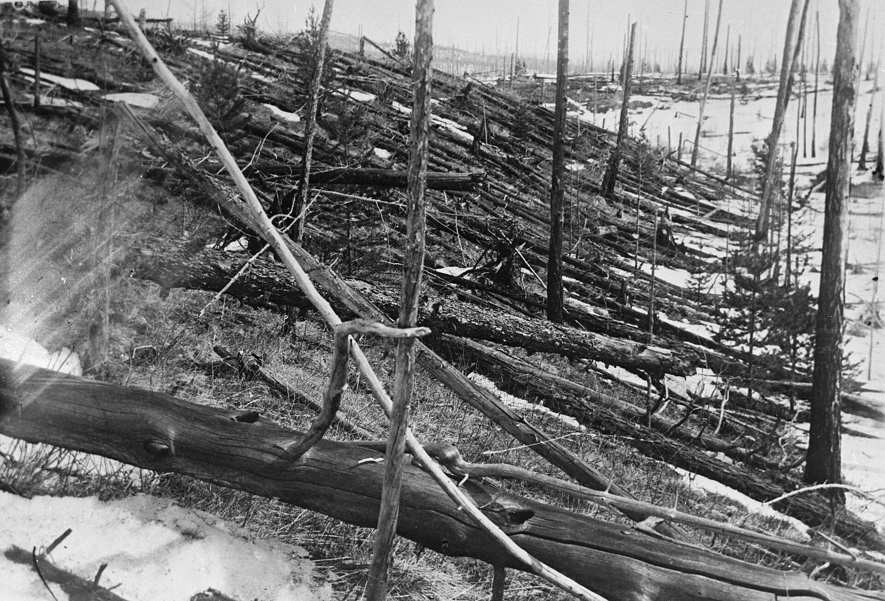
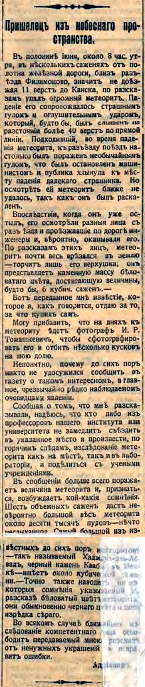
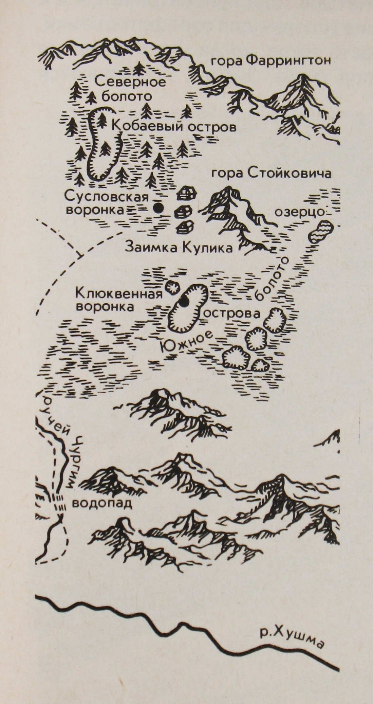
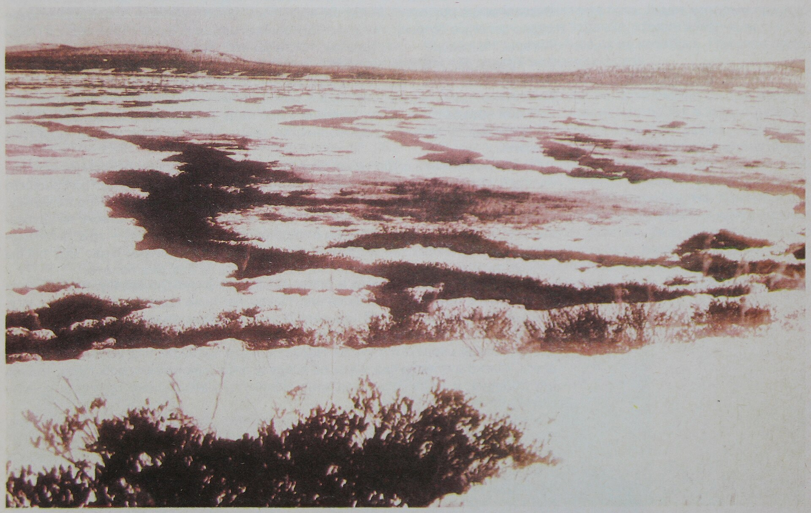

Kulik expedition, May 1929 · public domain · colour graded
Siberia · 1908
Why is there
no crater?
80 million trees went down. Nobody ever found the hole.

Sibirskaya Zhizn, 12 July 1908 · public domain
The first report came 12 days later — and it was
wrong
@theglassnegative · 02 / 06

Survey map of the fall area, published 1931 · public domain
He spent
19 years
hunting a hole that was never there
Leonid Kulik reached the site in 1927. He was sure one of these bogs was the impact point. None of them were.
@theglassnegative · 03 / 06

Tunguska bogs, before Sept 1930 · public domain · colour graded
80 million
trees down. 2,150 km². No hole in the ground.
@theglassnegative · 04 / 06
Kulik expedition, May 1929 · public domain · colour graded
It never hit the ground
It burst about 8 km up. At the centre, trees were left standing but stripped bare — the blast came straight down.
@theglassnegative · 05 / 06
Kulik expedition, May 1929 · public domain · colour graded
Still open
Nobody ever found
a single piece
Rock or ice, we still don't know what it was made of.
Follow @theglassnegative